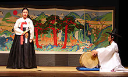

문화
한국은 반도에 있는 지리적 조건으로 대륙 문화와 해양 문화의 영향을 모두 받았다. 고대의 한국 문화는 시베리아, 중앙아시아의 북방계와 동남아시아의 남방계가 혼합된 바탕에 중국 등 이웃 나라에서 들어온 외래 문화와 한국 고유의 독자적 문화와 융합하여 발전했다.
한국 문학(韓國文學)은 한국인 또는 한국어를 구사하는 사람이 한국의 사상과 감정, 정서 등의 가치 있는 체험을 바탕으로 하여 그 시대의 표현 방식을 빌려 형상화한 문학의 총칭이다. 한국 문학이 오늘날 문학이라는 낱말 밑에 사람들이 이해하고 있는 수준에 이르른 것은 서양 문화와의 접촉을 통해서이다. 근대 문학 혹은 현대 문학이라는 시대에 따른 문학사 구분은 바로 서양 문학을 받아들여 한국어로 쓰인 문학 양식의 밑바탕을 닦고 발전시켜온 19세기 말에서 현대에 이르는 약 100여 년간 생겨나 존속되어 온 개념이다.
한국음악(韓國音樂)의 기반이 된 음계는 한반도 및 중국 동북부 등과 교류하여 고대시대부터 전래되어오는 것과 근대화와 산업화에 의한 빠른 문화유입에 의한 음악적 반응을 포함하여 한민족(韓民族)의 음악을 총칭한다. 넓은 의미의 한국음악은 소위 국악으로 불리는 한국음악과 현대에 서양음악의 기법을 사용하여 창작된 근대한국음악 및 현대의 창작국악을 포함한 한국현대음악, 그리고 현대의 한국대중음악을 모두 포함하는 개념이나 일반적으로 국악은 한국음악으로 불리며 한국현대음악도 한국음악에 포함된다. 또한 한국음악과 한국대중음악은 구분된다. 한국음악은 지역상 동양음악의 한 갈래이며 기초 인문학인 음악사학의 연구대상이다.
한국 미술은 약 기원전 7천여년전 신석기 시대부터 시작되었다. 고조선 시기에는 제의를 위해 만들어진 비파형 동검, 동경 (거울), 방울에서 그 예를 찾아볼 수 있다. 삼국 시대에는 왕족과 귀족을 위한 예술이 등장하였는데, 고구려의 고분벽화, 백제의 금동대향로, 신라의 금관이 대표적이다. 이후 고려시대에는 도자기의 일종인 고려 청자와 먹으로 그리는 문인화가 발달했다. 조선 시대 때부터 양반 사대부들을 성리학에 기반한 문화를 발전시켰으며, 이들은 문인화와 백자를 선호하였다. 이들 문화는 다분히 사대주의적이었으나, 영조와 정조 시대에는 정선, 김홍도, 신윤복 등의 화원들이 나타나 특색 있는 미술을 만들었다. 동시에 조선시대에는 서민적인 미술인 민화가 발달했다. 그 후 대한제국기와 일제 강점기를 거치면서 일본 유학생을 중심으로 서양 고전 미술과 모더니즘 미술이 도입되었고, 해방 이후 미국, 프랑스, 독일로 유학을 떠났다 돌아온 유학생들이 현대 미술을 시도하였다. 현대 한국 미술은 서양적 기술과 재료를 바탕으로한 혼합된 서양화가 주를 이루고 있지만, 서예, 동양화와 같은 전통미술 역시 명맥을 이어나가고 있다. 한편 백남준은 독창적인 비디오 아트를 선보여 한국 출신 작가 중 가장 전세계적으로 잘 알려진 예술가가 되었다. 하지만 한국 순수미술 분야는 국내외적으로 관심을 받지 못하고 있다. 반면 건축, 그래픽디자인, 산업디자인, 게임 같은 상업미술 분야에서는 점차 주목받고 있다.
한국 무용(韓國舞踊)은 한국의 전통 문화를 바탕으로 하여 만들어진 모든 종류의 무용을 말한다. 한국무용은 크게 궁중무용·민속무용·가면무용·의식무용·창작무용 등으로 나눌 수 있다. 한국무용의 원초적 형태는 국가적 의식 끝에 있는 축제(祝祭)의 흥이 어깨에서 구체화되어, 리드미컬하게 온몸으로 퍼져 멋으로 승화한 것으로 집약할 수 있다. 그러나 삼국시대를 거쳐 고려·조선시대로 내려오면서 이러한 한국무용의 특성은 변형되었다. 고려·조선시대의 윤리와 사상의 근저를 이루었던 불교와 유교의 가르침은 자연스럽게 발로되는 감각적 육체의 미를 부정하였고 그 때문에 육체의 노출은 금기(禁忌)로 되어 왔다. 이러한 영향 아래 한국무용의 특성이 변형·정형화(定型化)된 것이 궁정무용(宮廷舞踊)이다. 이와는 대조적으로 궁정무용과 함께 한국무용의 양대산맥(兩大山脈)이라 할 민속무용은 한국무용의 고유의 원형(原型)을 살리고, 중국의 무용을 흡수·소화한 것으로 경쾌하고 장중하며, 우아하면서도 변화가 거침없는 무용으로 발전하였다.
민속놀이(韓國의 民俗놀이)는 한국의 전통적인 놀이를 말한다. 예로부터 주로 서민층에서 명절이나 혹은 특별한 일이 있을 경우에 예식의 하나로서 여흥을 돋구고자, 또는 어린이들 사이에서 교육과 유희를 위해 행하여졌다. 각각의 놀이의 유래는 민속놀이는 남녀노소가 함께 즐길 수 있는 놀이가 있는가 하면, 어른들만이 하는 놀이, 소년, 소녀들끼리 하는 놀이, 여자들 간에 혹은 남자들 간에만 하는 놀이가 있다. 놀이의 성격을 벗어나 힘과 기술을 겨루는 스포츠로 발전한 것으로는 씨름을 꼽을 수 있다.
한류(韓流, Korean wave)는 대한민국의 대중문화가 주로 아시아를 중심으로 외국에서 대중성을 가지게 되는 것을 말한다.
1997년 무렵부터, 문화 수출국을 목표로 하는 대한민국의 국책을 배경으로, 2000년 전후부터 대한민국 드라마가 아시아의 여러 나라들에서 방송되었다.
그 후 중화인민공화국이나 일본에서도 한국의 대중 문화가 널리 유입되어 이 용어가 널리 사용되게 되었다.
